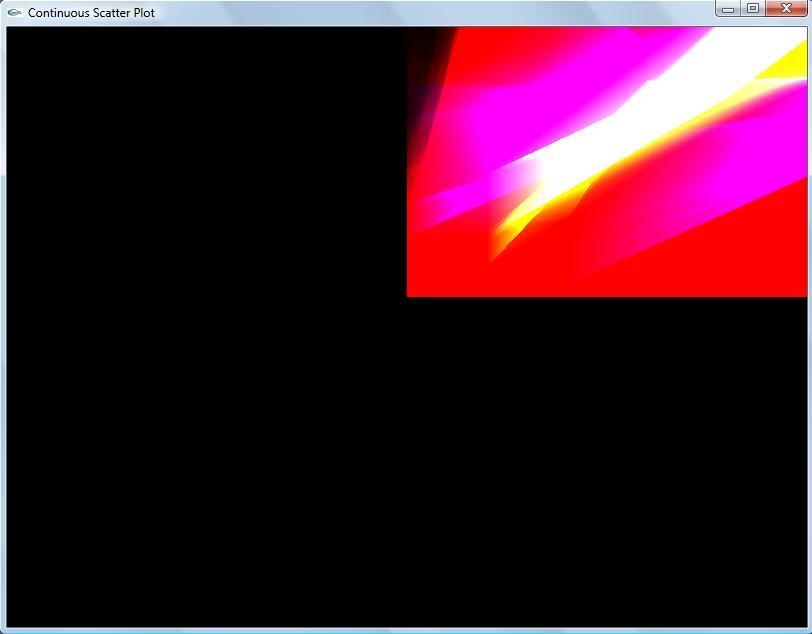

Project 788
Project Proposal
Progress in the project
1. Collected Input data
2. Parsing of the data into a 3 dimensional array
3. Calculated the gradient of the scalar data from the input and stored in the array as the second scalar data
4. Calculated the volume measure and rendering of the tetrahedra is done at the basic level
5. Got the first set of output for the continuous scatter plot (image below)
